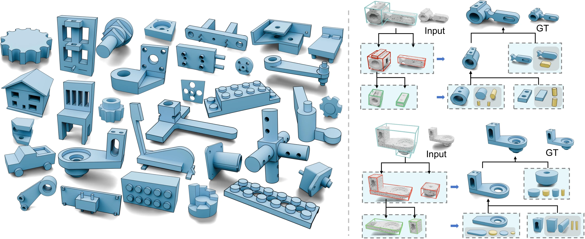
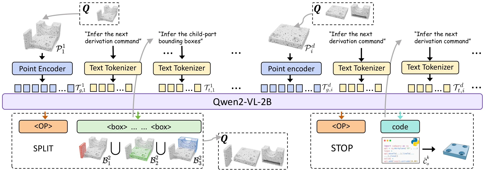
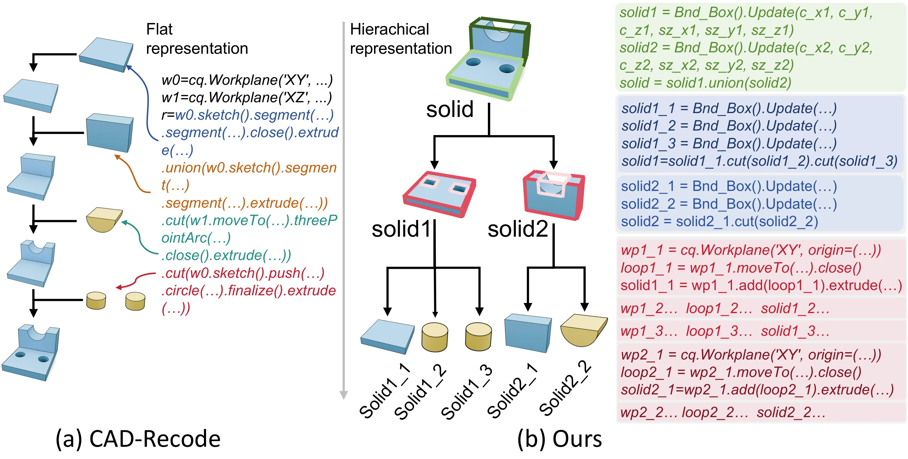
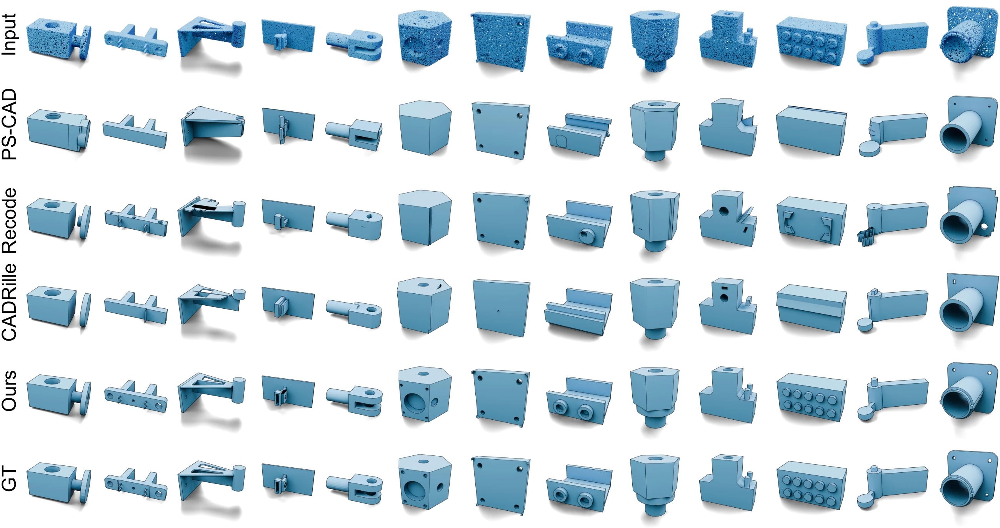
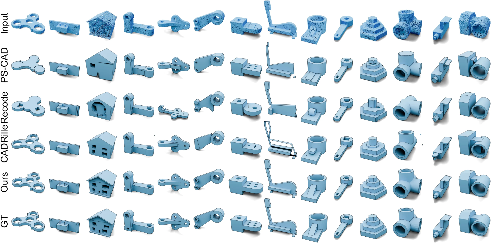
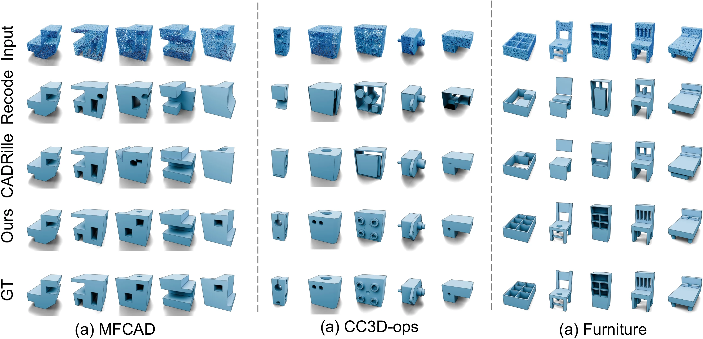
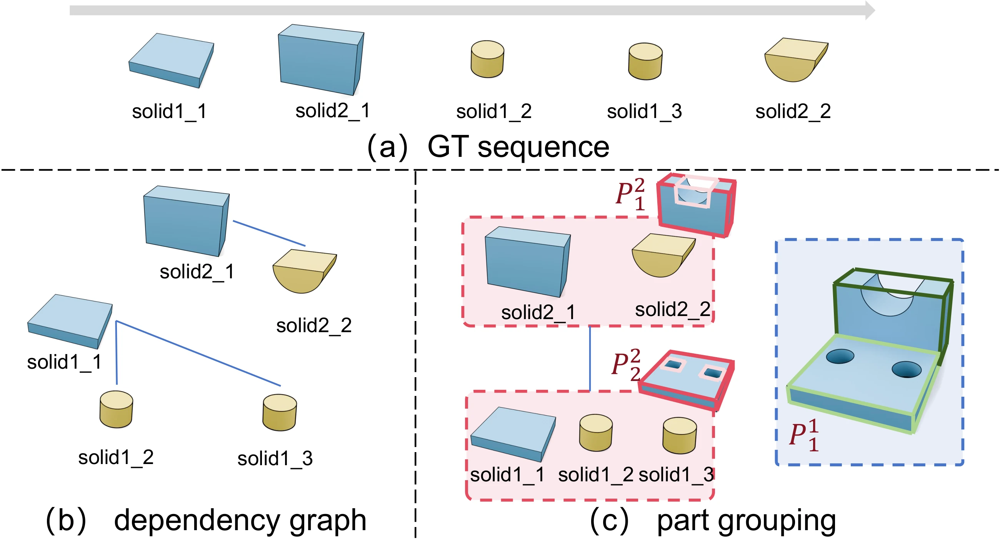

Localize
Crop and normalize the point cloud inside the current bounding box. Encode the local geometry with Utonia and positional features.
SIGGRAPH Asia 2026 / ACM Transactions on Graphics
1 University of Chinese Academy of Sciences2 Nanyang Technological University
✉ Corresponding author
From point clouds to structured, editable CAD.
Decompose globally. Reconstruct locally. Compose recursively.

Instead of predicting one long, flat script, CADRec reconstructs a hierarchy of spatially localized parts.
CADRec reconstructs editable CAD from point clouds. The model uses local geometry to recursively split each shape. We generate CAD code per part, then merge parts in global coordinates. The results are structured, editable CAD sequences for diverse shapes.
We present CADRec, a recursive CAD sequence reconstruction framework based on a hierarchically defined CAD DSL. This method addresses two limitations of previous methods. First, the flat, lengthy script representation of LLM-based reconstruction methods hinders generalization and does not take into account the reuse of code snippets. Second, existing one-shot and iterative geometric context encodings lack the structural clues necessary to accurately localize the geometric context for subsequent sequence reconstruction.
CADRec recursively decomposes the input shape into spatially localized parts and reconstructs each part with a local CADQuery program based on a hierarchical CAD DSL. At each node of the hierarchy, the model decides whether to further split the current part into child parts or stop and synthesize its leaf-level CAD script. The generated local programs are then mapped back to the global coordinate frame and composed into the final CAD model.
This hierarchical formulation turns global CAD reconstruction into a sequence of simpler local part prediction problems, reducing geometric complexity while preserving the structural organization of the design. To support this process, we encode localized point-cloud context and use an MLLM-based decoder to predict decomposition decisions and CAD programs. We further train the model with geometry-aware objectives that encourage consistent part decomposition and spatially grounded predictions.
Experiments on standard CAD reconstruction benchmarks demonstrate that CADRec improves both geometric fidelity and program validity over prior sequence- and code-based baselines.
Abridged from the paper. See the full paper for the complete abstract and experimental details.
A shared model makes two decisions at every node: split into child parts, or stop and generate a local CAD program.

Crop and normalize the point cloud inside the current bounding box. Encode the local geometry with Utonia and positional features.
Qwen2-VL-2B predicts child bounding boxes and Boolean operations, or generates a leaf-level CADQuery program.
Map local programs back to the global coordinate frame and assemble them bottom-up through union and difference operations.
The hierarchical CAD DSL separates structural reasoning from elementary sketch–extrude code, making intermediate parts explicit and reusable.

Contrastive geometry regularization aligns cropped or perturbed observations with the complete geometry of the same part. Box and point-mask grounding encourages predicted boxes to match their local geometric support. Both complement token prediction during training.
Evaluated on DeepCAD and the unseen Fusion360 test set, with both DeepCAD-trained and CAD-Recode-trained models.
Trained on DeepCAD → tested on Fusion360 · Single reconstruction per input · CD × 10³
Compare point-cloud inputs, prior methods, CADRec, and ground-truth geometry. Open a figure to inspect the fine details.


Results from Table 1 of the paper. Training sets are listed explicitly to distinguish the two evaluation settings.
| Method | Training set | DeepCAD | Fusion360 | ||||||
|---|---|---|---|---|---|---|---|---|---|
| Mean CD ↓ | Med. CD ↓ | IoU ↑ | IR ↓ | Mean CD ↓ | Med. CD ↓ | IoU ↑ | IR ↓ | ||
| DeepCAD | DeepCAD | 42.5 | 9.64 | 46.7 | 7.1 | 330 | 89.2 | 39.9 | 25.2 |
| Point2Cyl | DeepCAD | 10.2 | 4.27 | 73.8 | 3.9 | — | 4.18 | 67.5 | 3.2 |
| HNC-CAD | DeepCAD | 10.91 | 8.64 | 65.3 | 5.6 | 13.8 | 36.8 | 63.5 | 7.3 |
| PartCAD# | DeepCAD | 4.93 | 0.24 | — | 0.9 | — | 1.13 | — | 1.3 |
| PS-CAD | DeepCAD | 2.10 | 0.22 | — | 0.4 | 5.70 | 0.94 | — | 1.5 |
| CAD-Recode | DeepCAD | 3.37 | 0.25 | 78.1 | 1.0 | 6.45 | 0.72 | 66.4 | 1.8 |
| Cadrille | DeepCAD | 3.41 | 0.25 | 79.4 | 0.9 | 6.65 | 0.58 | 67.1 | 1.5 |
| CADRec Ours | DeepCAD | 0.62 | 0.17 | 92.7 | 0.2 | 0.81 | 0.19 | 85.8 | 0.1 |
| CAD-Recode | CAD-Recode | 0.76 | 0.18 | 87.1 | 3.8 | 1.18 | 0.20 | 81.9 | 4.4 |
| Cadrille | CAD-Recode | 0.66 | 0.18 | 87.1 | 2.1 | 0.65 | 0.19 | 84.4 | 1.1 |
| CADRec Ours | CAD-Recode | 0.46 | 0.16 | 93.3 | 0.4 | 0.48 | 0.17 | 84.7 | 0.3 |
CD values are scaled by 10³. IoU and IR are reported in %. ↓ Lower is better; ↑ higher is better. — Not reported. # Results taken from the original paper. Single-candidate evaluation; see the paper for test-time sampling with 10 candidates.

Convert existing CAD sequences into hierarchical training targets while preserving Boolean dependencies.

Each sketch–extrude step becomes a leaf. After resolving difference operations, an overlap graph groups the remaining solids into reusable parts. Large groups are recursively partitioned, with a maximum of six children per group.
Scope & limitations. CADRec currently uses a predefined sketch–extrude grammar and bounding-box localization. Richer CAD operations and more flexible decomposition remain future work.
If you find this work useful in your research, please consider citing our paper.
Explore the code on GitHub@article{song2026cadrec,
title = {CADRec: Reconstructing a CAD Sequence Recursively
with Localized Geometric Contexts},
author = {Song, Haoxuan and Yang, Bingchen and
Xiao, Jun and Jiang, Haiyong},
journal = {ACM Transactions on Graphics},
volume = {45},
number = {6},
articleno = {212},
year = {2026},
month = dec,
doi = {10.1145/3842561}
}